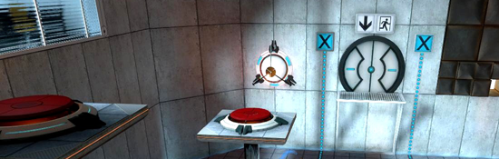
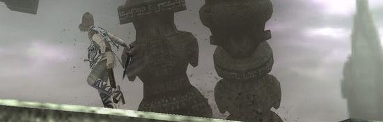
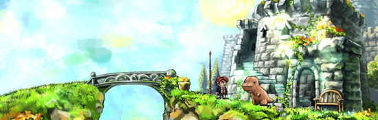
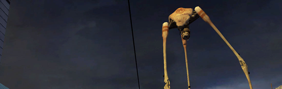
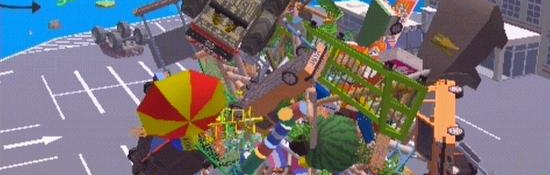

TPG’s Top 5 of the Aughts
2011-03-25 16:48:23
status: inherit
author: Bryan
One quick post before I get on my plane back to Shanghai.
In no particular order...

Portal.

Shadow of the Colossus.

Braid.

Half Life 2.

Katamari Damacy.
Why? Just because. No blah-blah this time around. There's enough brilliant stuff written about these games already.
Happy 2010!
Comments: